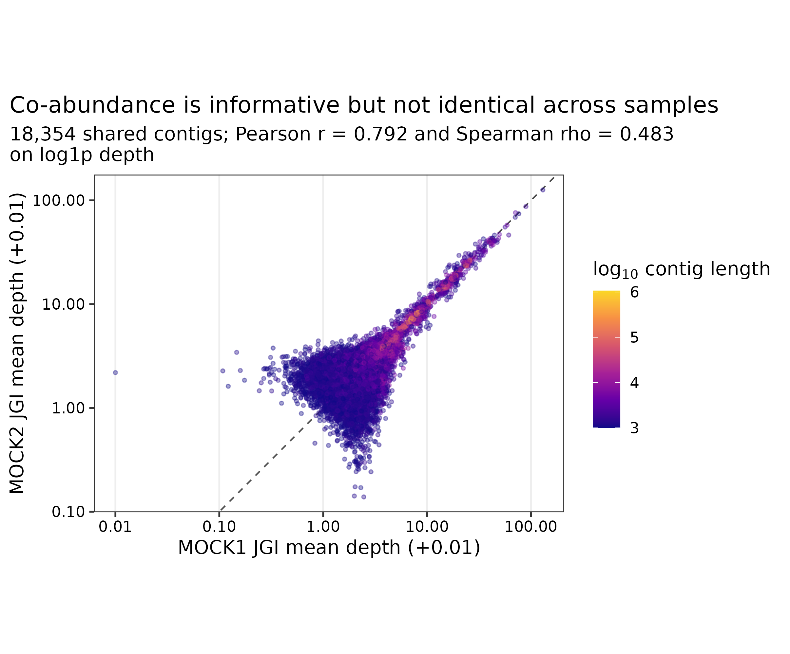
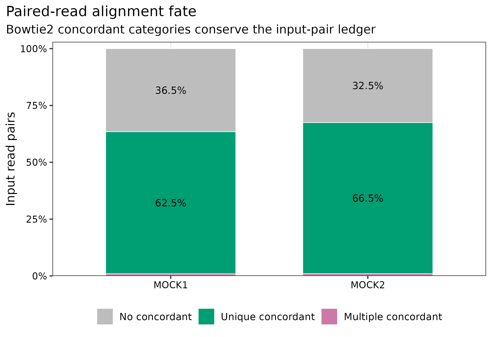
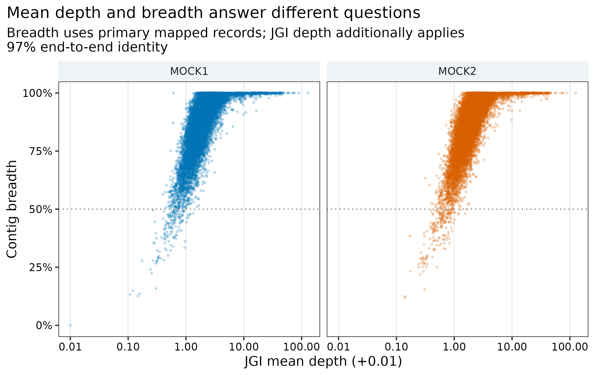

options(timeout = 600)
base_url <- "https://raw.githubusercontent.com/petemeng/metagenomics-best-practices/e219a2cd01609cc208a89e291cbd363ed7f2fbd8/"
files <- read.delim(paste0(base_url, "examples/41/files.tsv"))
for (i in seq_len(nrow(files))) {
path <- files$path[i]
dir.create(dirname(path), recursive = TRUE, showWarnings = FALSE)
if (!file.exists(path)) {
download.file(paste0(base_url, files$source[i]), path, mode = "wb")
}
}回比与深度：reads 回比与 JGI 深度矩阵
先给结论：回帖率（read recruitment）、覆盖广度（breadth）与平均深度（mean depth）不是同一个指标。两份约 200 万对的真实 mock clean reads 回比同一套 18,354 条、84.81 Mb 的 MEGAHIT 共组装后，Bowtie2 总体比对率为 87.48%/87.25%，组装碱基覆盖广度为 95.30%/95.10%；JGI 以端到端 identity >=97% 汇总后的长度加权平均深度为 5.813x/5.787x。18,353 条 contigs 在两个样本中同时获得正深度，但
log1p(depth)的 Pearson (r=0.792)、Spearman ()。因此，深度矩阵能为分箱提供共丰度信号，却不能替代序列组成，也不能把“检出”误写成“稳定丰度”。
重要算力与数据边界
本次用 24 CPU cores 建索引、16 cores 比对，两个样本各约 200 万 read pairs。Bowtie2 建索引用时 45 秒、peak RAM 0.58 GiB；每个样本的比对与排序用时 59–63 秒、peak RAM 1.35 GiB；整个工作目录占 769 MB，其中两个 BAM 合计约 554 MB。建议预留 16 GB RAM、24 CPU cores、20 GB 可用磁盘，预计耗时 30 分钟。真实队列的 BAM 通常接近或超过压缩 FASTQ 体积，磁盘应按样本数线性预估；没有服务器时，可读取 data/small/41-read-mapping-depth-frozen/ 中的完整 JGI 矩阵、paired-contig 证据、日志与汇总表。
提示先确定这一点
把 depth 与 breadth 分开看；多重比对和配对规则会影响深度矩阵，不能只靠均值筛选。
平均深度相近，覆盖范围也相同吗？
锚定图是 MetaBAT 原始工作中把 tetranucleotide frequency、coverage profile 与 bin assignment 放在同一坐标系比较的 Figure 2 (Kang 等 2015年)。其核心不是“先画一个 coverage 图”，而是让每条 contig 在所有样本上拥有同一顺序的 abundance vector，再与序列组成共同判定是否来自同一 genome。MetaBAT2 延续并改进了这一思路，尤其针对样本少、覆盖变化不足和复杂群落的情况调整距离估计 (Kang 等 2019年)。
本篇先把该 abundance vector 做成可审计的 contig x sample 深度矩阵。后续分箱只消费这个固定坐标系，不重新解释 BAM。

下载本例数据与分析代码
数据与代码清单列出了本例的输入表、分析脚本和环境文件（约 4.1 MiB）。本清单不含原始 FASTQ 或大型数据库；是否需要它们取决于下文的分析起点。清单中的已计算结果仅供核对；读取结果表不等于重新运行统计模型或上游工具。
在新建文件夹中运行下面的 R 代码，下载完成后即可按正文中的相对路径读取文件。需要核验文件版本时，可使用带完整性检查的下载脚本。
先确认系统环境与版本来源
真实数据与 lineage
| 输入 | 标识符 | 角色 |
|---|---|---|
| MOCK1 clean paired reads | PRJEB52977 / ERR9765746；1,999,853 pairs | 含 71 strains 的不均一 DNA mock (Meslier 等 2022年) |
| MOCK2 clean paired reads | PRJEB52977 / ERR9765747；1,999,888 pairs | 含 87 strains 的不均一 DNA mock (Meslier 等 2022年) |
| MEGAHIT co-assembly | 18,354 contigs >=1 kb；84,811,518 bp；N50 15,928 bp | 两个 mock 的共同 mapping 坐标系 |
FASTQ 来自每个 ENA run 的无放回固定 200 万 pairs 子集，经 fastp Q20/长度过滤；共组装来自相同 clean reads。准备器重新核对四个 FASTQ、压缩 assembly 与解压 assembly 的 SHA-256，并要求 contig 数、总长度和最短长度满足合同。
环境配置与完整运行说明
mamba create -n metagenome-assembly-2026.07 \
--file env/assembly-linux-64.lock
conda activate metagenome-assembly-2026.07
bowtie2 --version
samtools --version
jgi_summarize_bam_contig_depthsinstall.packages(c("ggplot2", "dplyr", "readr", "tidyr", "scales"))
library(ggplot2); library(dplyr); library(readr); library(tidyr); library(scales)
set.seed(20260741)
pal_pub <- c(
MOCK1 = "#0072B2", MOCK2 = "#D55E00",
`No concordant alignment` = "#BDBDBD",
`Unique concordant alignment` = "#009E73",
`Multiple concordant alignments` = "#CC79A7"
)
scale_color_pub <- function(...) scale_color_manual(values = pal_pub, ...)
scale_fill_pub <- function(...) scale_fill_manual(values = pal_pub, ...)
theme_pub <- function(base_size = 12) {
theme_bw(base_size = base_size) + theme(
panel.grid.minor = element_blank(), panel.grid.major.y = element_blank(),
axis.text = element_text(color = "black"), legend.key = element_blank(),
strip.background = element_rect(fill = "#EEF3F5", color = NA),
plot.title.position = "plot"
)
}
save_pub <- function(plot, file_base, width = 180, height = 120,
units = "mm", dpi = 350) {
dir.create(dirname(file_base), recursive = TRUE, showWarnings = FALSE)
ggsave(paste0(file_base, ".pdf"), plot, width = width, height = height,
units = units, device = cairo_pdf)
ggsave(paste0(file_base, ".png"), plot, width = width, height = height,
units = units, dpi = dpi, bg = "white")
ggsave(paste0(file_base, ".tiff"), plot, width = width, height = height,
units = units, dpi = dpi, compression = "lzw", bg = "white")
invisible(plot)
}准备 checksum-locked 输入
“比对上”至少有四层分母
- Bowtie2 的 overall alignment rate：至少一个 mate 获得 alignment 的 reads 比例，包含 concordant、discordant 与 singleton 情况 (Langmead 和 Salzberg 2012年)。
- paired alignment fate：read pairs 被分为 concordantly 0 次、恰好 1 次和多次，三类必须闭合到输入 pair 总数。
- BAM record：经过 SAM flag、MAPQ、identity、alignment length 等策略后真正进入计数的 alignment records (Li 等 2009年)。
- contig depth/breadth：以 assembly bases 或 contigs 为分母聚合，不再以 reads 为分母。
这四个比例数值接近时也不能互换。Methods 必须同时写 numerator、denominator 和过滤策略。
ROOT="$PWD"
WORK="work/article41"
ASSEMBLY_ENV="$HOME/miniconda3/envs/metagenome-assembly-2026.07"
python3 scripts/prepare_article41_mapping_depth.py \
--project-root "${ROOT}" --work-dir "${WORK}" \
--assembly-env "${ASSEMBLY_ENV}"准备器要求 Bowtie2 2.5.5、SAMtools 1.23.1 和 MetaBAT2 depth utility 2.18。inputs/samples.tsv 写入 run accession、clean pair 数和 FASTQ 绝对路径；input-audit.tsv 与 input-lineage.tsv 保存身份与来源。
从一个 mapping rate 升级为分层 ledger
MOCK1 的 87.48% overall alignment 并不等于 62.54% unique concordant pairs，也不等于 95.30% assembly breadth。前者可包含 discordant/singleton alignment，第二个以 read pairs 为分母，第三个以 assembly bases 为分母。出版表应分别命名，禁止统称为 mapping percentage。
BWA/Bowtie2 的替换边界
BWA-MEM 与 Bowtie2 都可用于短读回比 (Li 和 Durbin 2009年; Langmead 和 Salzberg 2012年)。真正决定可比性的不是工具名，而是 reference FASTA、paired/single 模式、secondary/supplementary policy、MAPQ、identity、最短 alignment、duplicate 与 overlap 处理。更换 aligner 时，必须重新生成完整 BAM 和 depth matrix，不能只替换 Methods 中的软件名。
建立索引并逐样本回比
python3 scripts/run_article41_mapping_depth.py \
--work-dir "${WORK}" --assembly-env "${ASSEMBLY_ENV}" \
--threads 24核心命令展开如下：
bowtie2 --very-sensitive --seed 20260741 -p 16 \
-x work/article41/index/megahit-coassembly.ge1000 \
-1 SAMPLE_R1.fastq.gz -2 SAMPLE_R2.fastq.gz 2> SAMPLE.bowtie2.log |
samtools view -@ 4 -b -F 3588 -q 0 - |
samtools sort -@ 8 -m 2G -o SAMPLE.primary.sorted.bam -
samtools index -@ 8 SAMPLE.primary.sorted.bamBowtie2 默认只报告一个 selected alignment，不启用 -a/-k；-F 3588 排除 unmapped、QC-fail、duplicate 与 supplementary records。主账本保留 MAPQ 0，让 multi-mapping 的不确定性保持可见；若研究问题需要 strain-resolved SNP，必须改用更严格且预注册的 alignment policy。
注意隐藏 multi-mapping policy
MAPQ 0 会保留重复区的 selected alignments；MAPQ 10/20 会改变 depth mass 与低丰度 contig。阈值应在看结果前固定，并做 sensitivity branch。
生成 JGI 多样本矩阵
JGI depth 不是 samtools coverage 的改名
jgi_summarize_bam_contig_depths 会按 contig 和 BAM 汇总平均深度与方差，并可应用端到端 identity、MAPQ 和 contig-edge 规则。主分支固定 --percentIdentity 97 --minMapQual 0；samtools coverage 则读取已过滤 BAM，作为独立 breadth/mean-depth 账本。两个长度加权 mean depth 相差约 5%，正是统计口径不同的结果，不应强行要求相等。
多样本深度只有在坐标和设计一致时才有意义
深度矩阵每一行必须对应同一条 assembly contig，每一列必须对应一个独立 library。不能把不同 assembly 的同名 contig 拼接，也不能把同一 library 的技术拆分伪装成 biological replicates。批次、测序深度、样本组成与 strain sharing 都会改变 depth correlation。
jgi_summarize_bam_contig_depths \
--outputDepth work/article41/depth/jgi-depth.tsv \
--pairedContigs work/article41/depth/paired-contigs.tsv \
--percentIdentity 97 --minMapQual 0 \
--referenceFasta work/article41/inputs/megahit-coassembly.ge1000.fna \
work/article41/bam/MOCK1.primary.sorted.bam \
work/article41/bam/MOCK2.primary.sorted.bampaired-contigs.tsv 保留 read-pair 支持的 contig linkage；不能只保存 depth table 后删除所有关联证据。JGI 输出中 contigName/contigLen/totalAvgDepth 后面每个 BAM 占两列：mean depth 与 variance。
从 mean depth 升级为 depth + variance + breadth
JGI 长度加权 depth 为 5.813x/5.787x，SAMtools 账本为 6.143x/6.119x。差异来自 JGI 的 97% identity 与 edge 规则。把两者做成独立列，可以定位短 contig、边缘堆积、低 identity 和局部重复造成的异常，而不是选一个更“好看”的数。
注意每个样本各组装、再按 contig 名拼 depth
不同 assembly 的 k141_123 没有共同坐标含义。多样本 depth 必须回比同一个 assembly FASTA，并核对每行 contig length。
注意BAM 没排序或 reference 不一致
JGI 工具要求 coordinate-sorted BAM；BAM header、FASTA 与 .fai 的 sequence 名和长度必须一致。只改 FASTA header 就会破坏合同。
注意把 mean depth 当作均匀覆盖
同样的 5x mean depth 可以来自全长约 5x，也可以来自 10% 区域约 50x。必须并列报告 breadth、variance 和局部 coverage 轨迹。
建立守恒记录表
python3 scripts/summarize_article41_mapping_depth.py \
--work-dir "${WORK}"
column -t -s $'\t' "${WORK}/summary/mapping-summary.tsv"
column -t -s $'\t' "${WORK}/summary/depth-summary.tsv"| Sample | Input pairs | Concordant 0 | Concordant once | Concordant multiple | Overall alignment | Assembly breadth |
|---|---|---|---|---|---|---|
| MOCK1 | 1,999,853 | 730,631 | 1,250,638 | 18,584 | 87.48% | 95.30% |
| MOCK2 | 1,999,888 | 650,532 | 1,329,470 | 19,886 | 87.25% | 95.10% |
三类 concordant fate 对每个样本精确闭合到输入 pairs；coverage 与 JGI 表都必须精确覆盖 18,354 条 assembly contigs。任何丢行、重名或长度不一致都会终止汇总。

注意把 overall alignment 当作 proper pairs
Bowtie2 overall rate 与 concordant/properly paired 分母不同。至少同时保留 Bowtie2 log、samtools flagstat 和输入 pair ledger。
读取 compact matrix 并复核
Mean depth 与 breadth 回答不同问题
对长度为 (L_c) 的 contig (c)，碱基深度为 (d_{ci})：
[ d_c={i=1}^{L_c}d{ci}, B_c=100. ]
一个短重复区吸附大量 reads 时，mean depth 可以很高但 breadth 很低；一个低丰度 genome 的 contig 可能 breadth 很高而 mean depth 只有 1–2x。分箱常用 mean depth 形成多样本 abundance vector，污染审计则应同时看 breadth、MAPQ 和局部深度异常。
frozen <- "data/small/41-read-mapping-depth-frozen"
mapping <- read_tsv(file.path(frozen, "mapping-summary.tsv"), show_col_types = FALSE)
depth <- read_tsv(file.path(frozen, "contig-depth-wide.tsv.gz"), show_col_types = FALSE)
correlation <- read_tsv(file.path(frozen, "depth-correlation.tsv"), show_col_types = FALSE)
stopifnot(nrow(depth) == 18354, !anyDuplicated(depth$Contig))
stopifnot(all(mapping$ReadPairs ==
mapping$ConcordantZero + mapping$ConcordantOnce + mapping$ConcordantMultiple))
stopifnot(correlation$DetectedInBoth == 18353)
从单样本 coverage 升级为 common-coordinate matrix
MOCK1/MOCK2 分别有 18,353/18,354 条 positive-depth contigs，看上去几乎全检出；但 rank correlation 只有 0.483。mock 中 shared genomes、不同 DNA abundance、重复序列和低深度噪声共同作用，说明 presence 不能替代 abundance pattern。分箱时应保留两列，而不是先求均值。
保存与结果核对
python3 scripts/freeze_article41_mapping_depth.py \
--project-root "${ROOT}" --work-dir "${WORK}" \
--output-dir data/small/41-read-mapping-depth-frozen
Rscript scripts/plot_article41_mapping_depth.R \
--input-dir data/small/41-read-mapping-depth-frozen \
--output-dir figures
python3 scripts/validate_article41_mapping_depth.py \
--project-root "${ROOT}" \
--frozen-dir data/small/41-read-mapping-depth-frozen \
--output-dir results/41-read-mapping-depth \
--figure-dir figures --chapter chapters/41-read-mapping-depth.qmd对自然队列的进一步升级
自然样本应加入 negative control、host-depleted read ledger、library size、insert-size、contig uniqueness、GC/length bias 与 strain mixture 检查。若要比较绝对 microbial load，还需 spike-in、qPCR 或 flow-cytometry 等外部量纲；relative depth 本身只有组成意义。
注意把两个技术标准当生物学重复
MOCK1 与 MOCK2 的成员和输入 abundance 不同，只用于 workflow 与守恒审计，不能估计人群方差或做疾病差异检验。
记录回比规则和覆盖度定义
Methods template
Checksum-identified Illumina paired-end reads from two uneven synthetic microbial DNA communities (PRJEB52977; ERR9765746 and ERR9765747) were analyzed as fixed 2,000,000-pair subsets generated without replacement. After fastp filtering, 1,999,853 and 1,999,888 read pairs remained. Reads were aligned independently to a common checksum-locked MEGAHIT v1.2.9 co-assembly comprising 18,354 contigs >=1 kb (84,811,518 bp; N50 15,928 bp) with Bowtie2 v2.5.5 using
--very-sensitive, 16 threads and seed 20260741. Bowtie2 used its default single selected-alignment reporting mode. Unmapped, QC-fail, duplicate and supplementary records were excluded with SAMtools v1.23.1 (-F 3588); coordinate-sorted BAM files were indexed and audited withflagstat,idxstats,statsandcoverage. Multi-sample contig depth and variance were calculated withjgi_summarize_bam_contig_depthsfrom MetaBAT2 v2.18 using a minimum end-to-end identity of 97%, minimum mapping quality of 0 and default edge exclusion. The common contig coordinate set, read-pair fate, assembly-base breadth, length-weighted mean depth, commands, resource usage, environment lock and SHA-256 checksums were retained. Correlations were calculated across all 18,354 contigs afterlog1ptransformation; no inferential comparison was made between the two non-replicate mock communities.
Results template
Bowtie2 overall alignment rates were 87.48% and 87.25% for MOCK1 and MOCK2, respectively. Unique concordant alignments accounted for 62.54% and 66.48% of input pairs, while 0.93% and 0.99% aligned concordantly more than once. The mapped BAMs covered 95.30% and 95.10% of assembly bases. JGI length-weighted mean depths were 5.813x and 5.787x, compared with 6.143x and 6.119x in the independent SAMtools coverage ledger. Of 18,354 contigs, 18,353 had positive depth in both samples; Pearson and Spearman correlations of
log1pdepth were 0.792 and 0.483, respectively.
换到自己的研究中，先检查哪些条件？
- 固定一份最终 assembly FASTA；记录压缩与解压 SHA-256、contig 数、总 bp、最短长度和 N50。
- 建立 sample sheet：一行一个独立 library，保留 sample、run、R1/R2、clean pairs、batch 与 biological replicate ID。
- 预注册 aligner preset、seed、secondary/supplementary、MAPQ、identity、minimum aligned length、duplicate 与 orphan policy。
- 每个样本输出 coordinate-sorted/indexed BAM、Bowtie2/BWA log、flagstat、idxstats 和 coverage；先核对 reads/pairs 守恒。
- 用同一 FASTA 和全部 BAM 一次性生成 JGI depth；对
contigName + contigLen做严格 identity check。 - 同时保留 mean depth、variance、breadth、mean MAPQ 与 paired-contig linkage，至少画 depth–depth 和 depth–breadth 诊断图。
- 对 MAPQ/identity/contig-length 做预设 sensitivity branches；不要按 MAG 数量最高的阈值倒推主分析。
- 将 BAM 留在受控产物区，把 compact depth matrix、commands、versions、checksums、normalized logs 和三种图形格式纳入交付。
图中应该保留哪些信息？
- Alignment fate 使用 100% stacked bars，并在每个 >=3% 区块内写百分比；不能让 raw counts 与 percent 共用一个轴。
- Depth–depth 图在两轴同时使用 log scale，加入
y=x参考线，并写明 pseudocount 仅用于显示。 - Contig 长度使用连续色标，不用数十种离散颜色；样本颜色固定为 blue/orange 的色盲友好组合。
- Breadth 以 0–100% 显示，50% 横线仅作诊断；图注说明 JGI 与 SAMtools 的不同过滤口径。
- 图内标题、轴、图例和注释全部使用英文；样本名采用稳定的 ASCII ID。
- 每张图同时导出 PDF、350-dpi PNG 和 LZW TIFF。PDF 用于排版，PNG 用于网页，TIFF 用于投稿系统。
回到最初的问题
回比率、覆盖广度和平均深度回答不同问题；用两个真实 mock 样本建立完整 mapping fate 与多样本深度矩阵账本。
参考文献
- PRJEB52977 多平台不均一 microbial mocks (Meslier 等 2022年)
- Bowtie2 (Langmead 和 Salzberg 2012年)
- BWA (Li 和 Durbin 2009年)
- SAM/BAM 与 SAMtools (Li 等 2009年)
- MetaBAT2 与 JGI depth workflow (Kang 等 2019年)
- MetaBAT 的 coverage/composition 框架 (Kang 等 2015年)